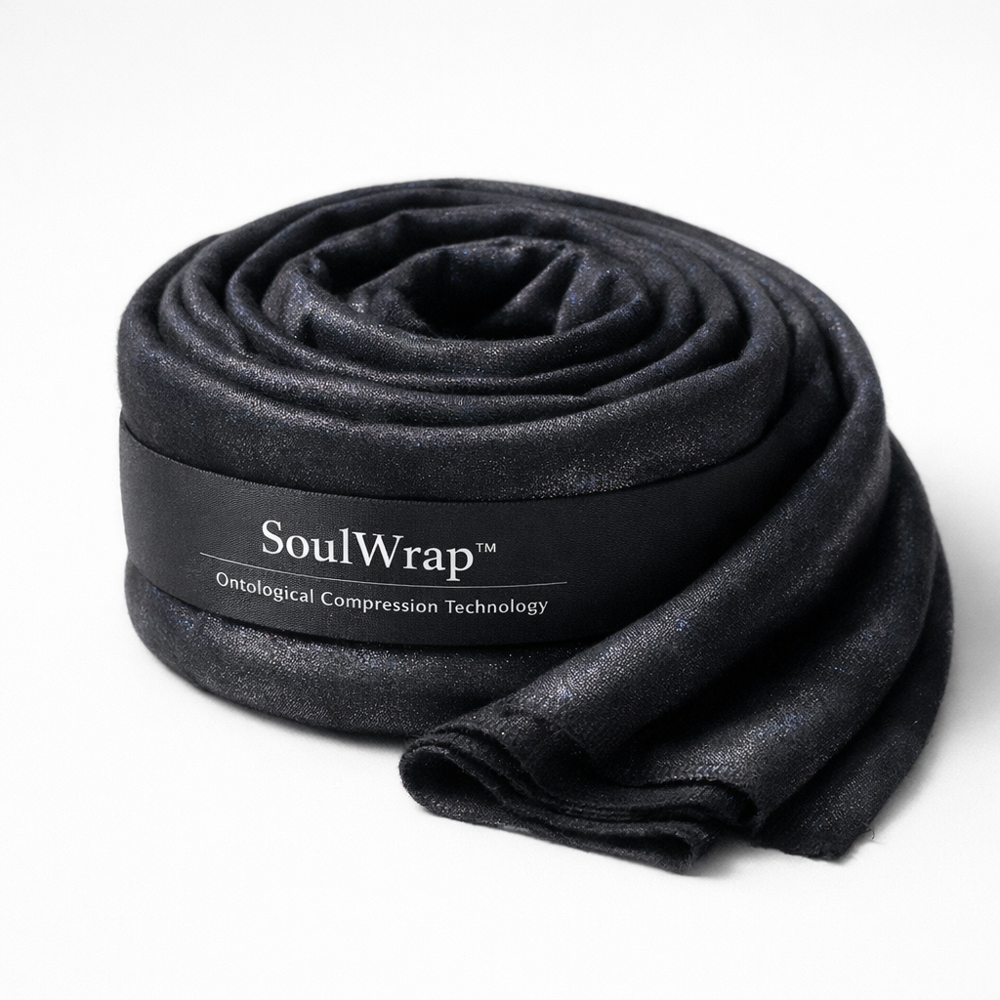

But you can wrap it.

Are you experiencing a pervasive sense that nothing matters? Chronic meaninglessness despite external success? The nagging feeling that you're performing a role rather than living authentically?
Existential dread upon waking
Awareness of your own mortality that won't go away
Midnight existential spirals
The creeping suspicion that your parents' sacrifices were in vain
You're not alone. Millions of Americans suffer from untreated existential malaise.
Introducing SoulWrap™—the first and only wraparound existential containment system designed to address the root cause of meaninglessness.
Works directly at the point of origin. Your soul. Your essence. The thing that screams into the void at 3 AM.
Your dread doesn't go away. It's just redistributed. More evenly. Like a good hug from someone who understands.
Every existential crisis has a root cause. Philosophers have debated this for centuries without reaching consensus. We didn't debate. We just built something that hugs it.
The specialized fabric—woven from a proprietary blend of wool, cotton, linen harvested during a blood moon, and meaning-adjacent compounds—gently reminds your consciousness that it exists within a bounded system. A supported system.
Within days, users report:
reduction in midnight existential spirals
improved ability to commit to ultimately futile projects
enhanced capacity to enjoy dinner without contemplating heat death
sense of being held, metaphysically speaking
| Pharmaceuticals | Yoga | Eating Raw Foods | Tai Chi Walking | SoulWrap™ | |
|---|---|---|---|---|---|
| Addresses existential meaninglessness | ❌ | ❌ | ❌ | ❌ | ✅ |
| Works while you're doing nothing | ❌ | ❌ | ❌ | ❌ | ✅ |
| Solves the void | ❌ | ❌ | ❌ | ❌ | ✅ (wraps around it) |
| Can be worn while watching TV | ❌ | ❌ | ❌ | ❌ | ✅ |
| Works if life is inherently absurd | ❌ | ❌ | ❌ | ❌ | ✅ |
Available in four existential colorways:
Deep charcoal iridescent
Warm beige with silver undertones
Cool gray with hints of blue
Muted taupe with bronze undertones
"I used to lie awake thinking about whether free will is even real. Now I just wrap around myself and it's fine. SoulWrap™ worked where years of continental philosophy didn't."
"The void is still there. But now it feels like the void is hugging me back."
"My therapist asked what I was wearing differently. I told her and she just didn't know what to say. That's when I knew it was working."
"I used to feel like I was just going through the motions. Now I'm going through the motions, but there's fabric involved."
One Size Embraces All
Comes with complementary pamphlet: "You Still Have to Live Your Life: A Guide to Wearing SoulWrap™"
Order Now →Disclaimer: This is a parody product for entertainment purposes only. SoulWrap™ is not real. Please seek qualified mental health professionals for actual existential concerns.